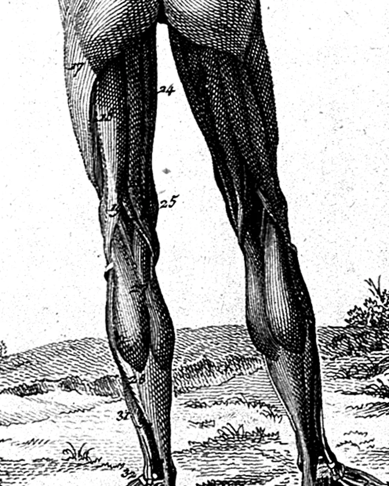

Sobre nosotros
Una clínica pequeña en un bajo de la calle de la Curva, en Córdoba. Tres fisios, tres salas y una forma de trabajar.
Por qué la Curva
El nombre viene de la calle, que hace una curva justo delante de la puerta, y de la espalda, que también tiene las suyas y funciona mejor cuando las conserva.
Abrimos en 2019 en el bajo de una antigua mercería del barrio. Veníamos de clínicas donde cada fisio llevaba a tres pacientes a la vez, con sesiones de veinte minutos y una máquina detrás de cada cortina. Queríamos lo contrario: una persona, una sala cerrada y cincuenta minutos.
La mayoría de la gente que viene vive o trabaja a pocas calles. Por eso los horarios llegan hasta las nueve y media de la noche y abrimos los sábados por la mañana.
Quiénes somos
-

Lucía
Fisioterapeuta. Lleva sobre todo espalda, cuello y lesiones deportivas. Corre los domingos por la ribera y entiende bien a quien no quiere parar.
-

Andrés
Fisioterapeuta. Se ocupa de la readaptación y de los posoperatorios de rodilla, cadera y hombro, en coordinación con el traumatólogo de cada paciente.
-

Marta
Fisioterapeuta de suelo pélvico. Atiende en la sala aparte, con tiempo para hablar antes de hacer nada, y se coordina con matronas y ginecólogas.
Cómo trabajamos
- Una persona de principio a fin
- El fisio que te valora es el que te trata y el que te da el alta. No tienes que contar tu historia dos veces.
- Cincuenta minutos de verdad
- Una sala cerrada y un solo paciente. Si una sesión se alarga cinco minutos, no corre prisa.
- Te decimos cuándo no nos necesitas
- Si lo tuyo no es para fisioterapia o necesitas antes otra prueba, te lo decimos y te orientamos hacia tu médico.
- Precios publicados
- Lo que cuesta está en la web y no cambia según el tratamiento. Sin matrícula, sin permanencia y con factura.
El sitio
Un bajo sin escalones, con la puerta a pie de calle y un baño adaptado. Dos salas de tratamiento cerradas, una sala de ejercicio con espalderas y pesas, y una sala aparte para suelo pélvico con su propia entrada desde el pasillo.
Hay aparcamiento de bicis en la puerta y una parada de autobús a dos minutos. Cómo llegar.